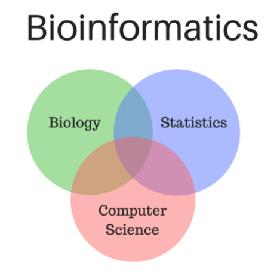

Bioinformatics
WHAT IS BIOINFORMATICS?
"the science of collecting and analyzing complex biological data"
Bioinformatics is the field of science in which biology, computer science, and information technology merge into a single discipline. The ultimate goal of the field is to enable the discovery of new biological insights as well as to create a global perspective from which unifying principles in biology can be discerned.
Applications:
- Genetics
- Ecology
- Medicine
- Proteomics
Ex: Effects of Different Genetic Variants on Schizophrenia Risk
QUOTES
- "If you want to compete in bioinformatics, first you need to compete for really smart people. You need really smart people who understand how to manipulate nanomolecules." — Juan Enriquez
- "When you think about it, caring for patients is 99 percent information and 1 percent intervention, so it's clear that with or without genomics, the paradigm is shifting. Bioinformatics brings a cutting edge capacity to healthcare." — Christopher G. Chute
- "Ageing is very exciting. But if I didn't work on ageing, I'd want to work on the brain. There are really cool techniques you can use now. And bioinformatics. The methods you can use for comparing large data sets - that's so powerful." — Cynthia Kenyon